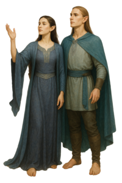

Bardh
Sindarin Crash Course by Rínor
Contents
Verbs describe actions, events, and states. In dictionaries, Sindarin verbs are usually listed by their stem followed by a hyphen, such as mad- “to eat”. The hyphen simply shows that you are looking at the verb stem; it is not written in an actual sentence. When you use the verb, its form may change depending on tense and subject. Sometimes the finished form looks just like the stem without the hyphen.

Sindarin verbs are usually divided into two main groups: basic verbs, which come from simple primitive roots, and derived verbs, which were formed with verbal suffixes. You may also see these called i-stem and a-stem based on the i or a that commonly appears in their present tense forms. David Salo uses these terms in Gateway to Sindarin, although I do not know whether he was the first to use them. Paul Strack instead calls them “basic” and “derived” verbs, which better matches the terminology used for similar verb classes in Quenya.
These are useful starting groups, but an individual verb's history can affect its forms. See Eldamo's discussion of verb classes.
The simple present tense in Sindarin appears to originate from the ancient Common Eldarin aorist tense.
Because we have so few examples, its exact use is difficult to pin down. In Neo-Sindarin it is generally treated much like the English simple present, but it can also express an ongoing action. For example, “tôl achar(n)” has been interpreted as either “vengeance comes” or “vengeance is coming” In this course, I use the simple present for my example sentences.
A noun without an article can be indefinite, but names, generic expressions, and some genitive constructions can also appear without one. Context matters. See the noun lesson and Eldamo's article guide.
Present Tense: With a basic verb, the third-person singular normally has no ending. If the verb is monosyllabic, its stem vowel is usually lengthened without otherwise changing: en·edhel nôr “the elf runs (nor-)”, en·edhel orthor “the elf conquers (orthor-)”.
When you add a personal ending, an -i- is inserted between the stem and the ending. This also causes internal i-affection, so a, o, u become e, e, y: nerin “I run”.
Prefix behavior is less certain. A prefix still felt as a separate element may resist i-affection: ortherin “I conquer (= over-rule)”, while a prefix absorbed into the stem may change: ephedin (aphad-) “I follow”. For a stated plural noun subject, the verb uses the joining vowel followed by -r, again with internal i-affection: in·edhil nerir “the elves run”, in·edhil ortherir “the elves conquer”.
* Basic verbs with u in Sindarin are very rare (none are attested), and this example verb *run- “to rub” is created for demonstration purposes.
For derived verbs, the third singular present form (without any suffix) is just the verb stem: en·edhel padra “the elf walks (padra-)”. When many personal endings are added, the final a becomes o: padron “I walk”. The suffix -r is added without changing the vowel: in·edhil badrar “the elves walk”. The inclusive ending -b also preserves the final vowel in the paradigm used here.
Half-strong verbs drop the final a in the third singular: en·edhel dangod “the elf confirms (tangad(a)-)”. The a returns with subject suffixes but usually does not change to o as with derived verbs: tangadan “I confirm”.
Some half-strong verbs also change an internal vowel in the third singular. This group is only partly documented, so the table represents a practical Neo-Sindarin paradigm rather than a completely attested set of forms.
Further detail: present-tense formation and verb inflections.
When learning a verb, you also need to know how it is used in a sentence. Can it take a direct object? Does it need a preposition? Can it stand on its own? This is part of what linguists call its transitivity.
For example, weeping and mourning someone are related ideas with different possible constructions. Likewise, grinding a substance into powder and grinding one's teeth do not necessarily use the same verb. Ellanto raised these distinctions in the older translation discussions.
Identify the subject, the verb's intended sense, and any object before applying direct-object mutation. A noun following a verb may instead be its subject, so position alone does not establish the role. And if a particular preposition has only been suggested for an uncertain verb, treat it as a proposal for that verb rather than a general rule.
For more vocabulary distinctions, see 1.2.6.3 Distribution of Meaning Among Words.
A verb can also introduce a description of its subject. Compare English “the sky becomes dark” with “the traveler sees the sky”. In the first, “dark” is a predicate adjective, not a direct object. Continue with 1.2.4.2b Adjectives After Predicate Verbs.
The following present-tense paradigm draws on Paul Strack's discussions of the present tense and subject suffixes. This course keeps the inclusive and exclusive distinction shown below.
| Present Tense | Basic (car-) | Derived (gala-) | Half-Strong (tangad(a)-) |
|---|---|---|---|
| 1st: Singular | cerin “I do” | galon “I grow” | tangadan “I confirm” |
| 2nd: Singular Familiar | cerig “you do” | galog “you grow” | tangadag “you confirm” |
| 2nd: Singular Formal | ceril, †ceridh “you do” | galol, †galodh “you grow” | tangadal, †tangadadh “you confirm” |
| 3rd: Singular | câr “he/she does” | gala “he/she grows” | tangod “he/she confirms” |
| 1st: Plural Inclusive | cerib “we (and you) do” | galab “we (and you) grow” | tangadab “we (and you) confirm” |
| 1st: Plural Exclusive | cerif “we (not you) do” | galof “we (not you) grow” | tangadaf “we (not you) confirm” |
| 2nd: Plural Formal | ceridh, †ceridhir “you do” | galodh, †galodhir “you grow” | tangadadh, †tangadadhir “you confirm” |
| 3rd: Plural | cerir “they do” | galar “they grow” | tangadar “they confirm” |
Compare how the verb changes with different subjects:
In the last two sentences, aew can be ambiguous. One way to make the meaning clearer is to add the definite article: Yrch vedir in·aew. “Orcs eat the birds.”
Practice the present-tense forms in isolation. Sentence-level mutation is a separate step. You can explore other tenses in the Verb Conjugator.
The present tense is the main focus of this lesson. The following is a short introduction to future and past formation; the Verb Conjugator provides fuller paradigms. There is also a discussion of conjugation on Parf Edhellen.
The usual Neo-Sindarin pattern adds -atha to a basic stem or -tha to a derived stem ending in -a, followed by the appropriate personal ending. So the -athon in the first example already includes the first-person singular ending; -athon is not the future ending for every subject.
This course uses the ordinary Neo-Sindarin future. Tolkien also explored a narrower meaning expressing intention in 1969. See Eldamo's future-tense discussion.
The Sindarin past seems to work much like the English past tense, but forming it is considerably more complicated, and we have relatively few examples to work from. Several different features can mark the past, and not every verb uses the same ones:
These are alternative patterns, not five steps to apply to every verb. A transitive use takes a direct object; an intransitive use does not. That distinction often matters for derived pasts, although individual verbs can be irregular. Adding a subject ending may also change the past stem, so do not simply attach a present-tense ending to a third-singular past.
What about the perfect? Sindarin past formation incorporates features of older past and perfect formations. This introduction does not teach a separate productive perfect or pluperfect paradigm corresponding directly to English “has done” or “had done”.
See Eldamo's past-tense discussion for the evidence and the remaining uncertainties.
You do not need to master all of these yet, but they are useful to recognize while you are learning the present tense.
A verbal noun names an action. It can also serve as the complement of another verb, much like an English infinitive. Basic verbs commonly use -ed; derived stems ending in -a commonly add -d. Individual verbs may have other attested forms.
When a verbal noun is used like an English infinitive, it is not lenited simply because it follows another verb. It can take its own direct object, which may undergo mutation. When used as an ordinary noun after an article or preposition, it follows that construction instead.
See Eldamo's verbal-noun guide.
The usual imperative adds -o to a basic stem or replaces a derived stem's final -a with -o. An imperative can express a command or a wish. A noun following it may be the person addressed, the subject of a wish, or a direct object; its role determines the mutation.
A negative command commonly uses avo followed by a lenited imperative. This is distinct from ordinary factual negation or a speaker expressing refusal.
Further detail: imperatives and wishes and negation.
Participles are verb forms that describe someone or something. An active participle describes the one performing the action, while a passive participle describes the one affected by it. Sindarin does not simply have one form corresponding to every English word ending in “-ing” or “-ed”, so you first need to ask what the participle is actually describing.
| Type | What it describes | Plural agreement |
|---|---|---|
| Present active | The participant performing an ongoing action. | Normally unchanged. |
| Past active | The participant that has completed an action. | Normally unchanged. |
| Passive | The participant undergoing an action or described by its result. | Normally agrees like an adjective. |
These are the usual Neo-Sindarin agreement patterns I follow in this course, but the evidence is limited, and individual forms still need to be considered on their own.
Agreement in number and initial mutation are separate questions. First identify the participle and the noun it describes, then consider their grammatical relationship. See Plural Adjectives for adjective agreement.
Continue with Eldamo's guides to active participles and passive participles.
An English passive presents someone or something as undergoing an action. Sindarin can sometimes express the same event with a different construction. So rather than translating an English passive mechanically, first ask what is happening and who is involved.
Passive naming: a third-person plural form of esta- can express naming by unspecified people. In context, this can have the force of English “is called” or “was called”, according to the tense. This use does not require a named group of people as its subject. The person or thing being named must still be clear.
Ellanto discussed this in the Ufgor corrections. Eldamo's impersonal-verb discussion relates the naming construction to the King's Letter. It does not establish a general passive paradigm for every verb.
Dative experiencers: Some verbs can put the person experiencing something in the dative rather than making that person the grammatical subject. In other words, the person corresponding to English “I” or “he”, and so on is not necessarily the Sindarin subject. This depends on the particular verb and the meaning in which it is being used.
A proposal from the translation discussions: on 12 April 2026, Parmandil suggested an impersonal interpretation of the supplied lítha annin, drawing on an older Gnomish example for the forgetting sense. This is an interpretation of that evidence, not a settled requirement for every use of lítha-.
See Eldamo's lítha- entry and Dative Experiencers in the pronoun lesson.
A passive participle, an unspecified third-person plural, and a lexical impersonal verb are different constructions. Choose the one supported by the intended sense. A complete statement still needs a predicate saying what happens or what is true, even when a linking verb is omitted.
This summary brings together the main points from the noun and verb sections.
Under the PE23 pattern I use here, a verb immediately following a noun or emphatic-pronoun subject undergoes soft mutation. A directly following object can also undergo soft mutation, but these are two different grammatical relationships.
A subject placed after the verb is not mutated merely because it comes after the verb. When an object contains a definite article, use the article's own construction; do not apply a second automatic mutation to its noun. See the direct-object section and the mutation chart.
Further discussion and PE23 references: direct objects.